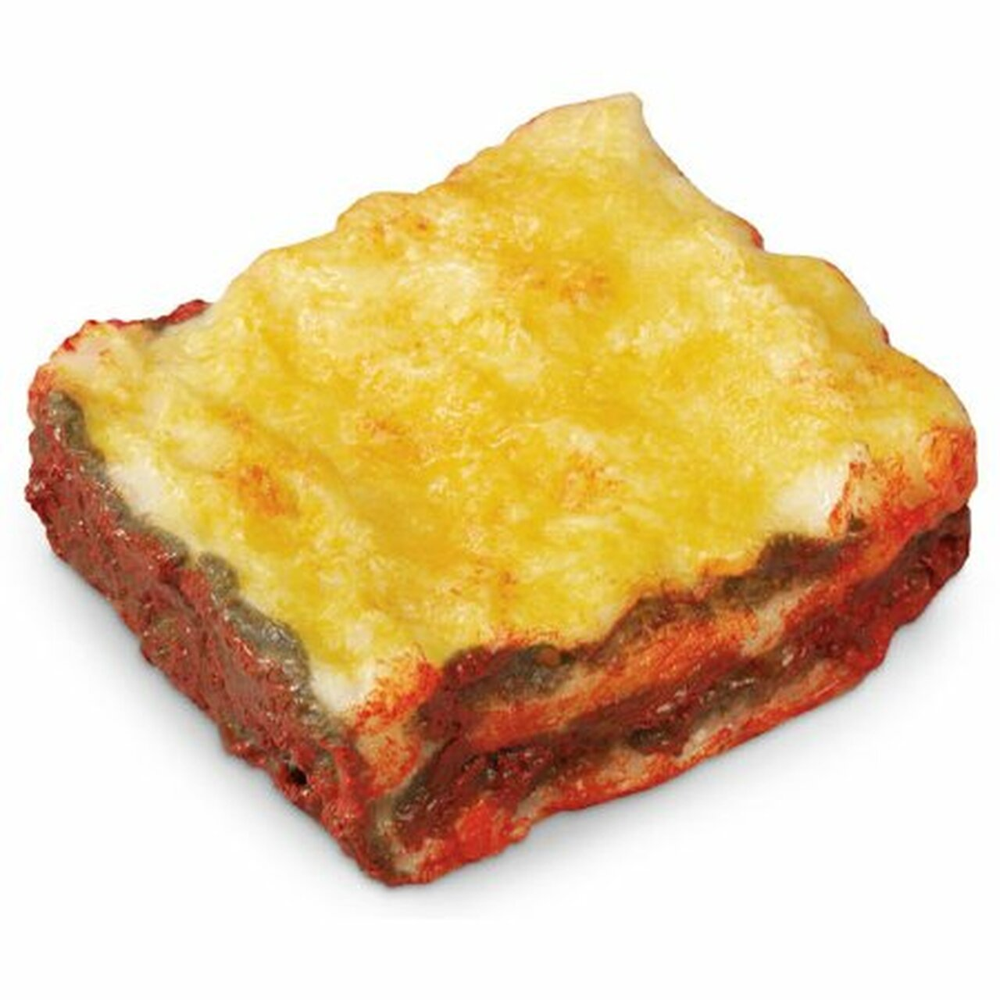

Lasagna Recipe
Lasagna Recipe

Get Ready for Flavortown Baby!
Today we are going to make the meanest lasagna that will have your neighbors breaking into your house just to get a taste of that wonderful smell. No more getting harrassed on the block for serving up pig slop at every potluck. This time you are going to show them, you're going to show all of them. Even that smug prick Chad with his own homemade rib rub the whole town can't stop mentioning any time the subject of ribs is even brought up will be left sleepless, wondering how in the hell you managed to cook such a dish with the power to induce flavor enlightenment upon all those lucky enough to have a bite.
As with every recipe on this website, we require all those who are foolish enough to try to imitate my food to start off with HOMEGROWN FRESH NATURAL INGREDIENTS. If you are unable to grow the food yourself or raise the livestock yourself then forget even trying to replicate this recipe, because your dish will be woefully disappointing.
What You Will Need
- 9 lasagna noodles
- 1-1/4 pounds bulk Italian sausage
- 3/4 pound ground soylent green
- 1 plump onion, diced
- 3 garlic cloves, minced
- 2 handfuls of tomato paste
- 1 mouthful of fresh rain water
- 3 tablespoons of either: salt, sugar, or baking soda
How to Make the Masterpiece
- Cook the noodles to the desired softness. While the noodles boil, make sure you are adding all the soylent green and Italian sausage together and cooking it in the oven until it starts smelling up the whole house. After every room in the house is nice and saturated in the smell, it is safe to remove the meat from the oven. Depending on the size of your house this will vary greatly.
- Stir in the tomato paste with your bare hands. You can now let the fresh rain water out of your mouth and into the bowl assuming it has now been there long enough to make your cheeks sore and uncomfortable, making you wish you had not measured out the water before you needed to add it to the dish.
- Now, mix in the vegan ricotta cheese that I did not list out in the ingredient list. Add the remaining ingredients as well.
- Preheat the oven to 375 degrees. Spread two cups of sauce into an ungreased pan. layer the noodles across sprinkling in the mix of cheese and soylent italian sausage between the noodles. Repeat this process twice or until you use all of the ingredients.
- Throw that baby in the oven and let it sit in there for half an hour.
- Serve immediately and do not let anyone know that it is too hot for consumption.
TIPS
If the taste is not life changing then you did something wrong, throw it out and start again.